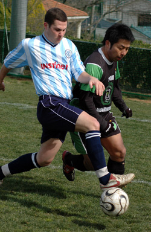
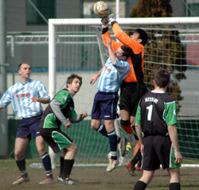

|
YC&AC, Sun 25th Feb. Title aspirants YCAC duly rolled over mid table Hibs Sunday lunchtime at YCAC. 3-0 it ended but it could have been worse if not for the woodwork, some familiar heroics from Hitoshi and a stoic performance from Jay in the heart of the Hibs defence. Those 2, Tomo, if he could concentrate on the game instead of Joe Takeda and Rob Scott, if he could get the hang of the offside rule, must all be targets for the bigger clubs in the next transfer window.
Despite their well known personnel issues, guys emmigrating en masse or skiing into trees to escape the sinking ship, Hibs had a decent 12 man squad out and tried manfully to work through the YCAC ranks with their measured short passing game, no easy task when its both windy and bumpy in Yokohama. These guys are just too good to get relegated and will surely secure the points necessary to stay ahead of the suddenly hard charging Jetro team in the dogfight at the foot of the table
With some tough fixtures coming up YCAC took the opportunity to rest some of its stars and give some valuable playing time to fringe players such as Damian Hart. It was Damo who drew 1st blood with a direct free kick from the edge of the box (theirs not ours).
Flashback to the 1st game at St Mary's in September. YCAC enjoying the lions share of the 1st half and leading 1-0 with a Damo goal. Tomo equalizes just before HT and, with the visitors paralyzed with fear after Scary Kevs pep talk, Hibs go on to win 4-1. 2nd time around, Tomo is busy with Joe, the lads have all chipped in to send Kev skiing and its YCAC who end up winning by 3. Jamie Richards ramming home the rebound after Neil Shonhard hit the bar with a header and Matty "Handbrake"Wallace, lacking the energy to run any further or even to turn to face goal, scoring with an overhead kick from 8 yards

Hibs/YCAC is, statistically, the closest rivalry in the TML. Each has 10 goals and 10 points, 3 wins each and a draw from the 7 games to date. That has completely stunned you. Admit it
Gary Hodgson, who marked his YCAC debut 2 seasons ago by saving a Keita penalty in a 2-1 victory over Hibs, has kept his last clean sheet in the TML. Gary has been absolutely outstanding for YCAC and, good as Damo, Dickie and others have been in front of him, is the main reason for our preeminent defensive record last season and this. Thank you Gary.
Thank Christ he's going before the Sala game next week. He's been totally crap against them, really really embarrassingly awful.
Report by Steve Taw
|